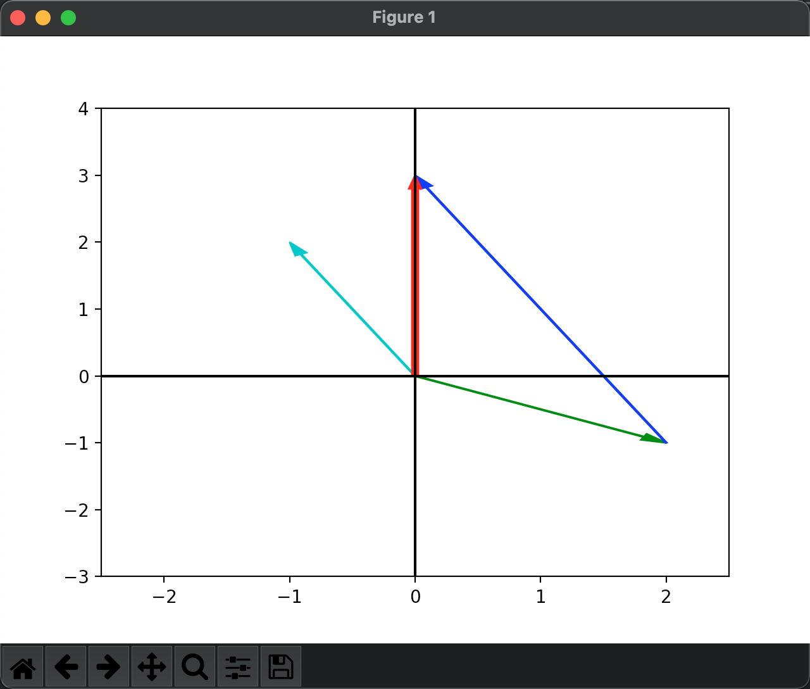

线性代数笔记(一)——方程组的几何解释
开篇第一讲主要通过线性方程组引出矩阵，并传授了如何通过行图像和列图像来分别理解矩阵的意义。最后基于列的线性组合视角来初步解答了这样的一个问题：对任意向量\(b\)，能否求解\(Ax=b\)。
方程组的几何解释
二元一次方程组
方程组： \(\begin{cases} 2x&-y&=0 \\ -x&+2y&=3 \end{cases}\)
写作矩阵形式有： \(\begin{bmatrix} 2&-1 \\ -1&2 \end{bmatrix} \begin{bmatrix} x \\ y \end{bmatrix}= \begin{bmatrix} 0 \\ 3 \end{bmatrix}\)
第一个矩阵一般称为系数矩阵\(A\)，第二个矩阵成为向量\(x\)，第三个矩阵称为向量\(b\)，线性方程组写为\(Ax=b\)。
行图像(Row picture)
如上例，按行解读如下：
- 第一行为2个x和-1个y组合成0
- 第二行为-1个x和2个y组合成3
这种解读与我们此前对二元一次方程组的解读方法是一致的，我们都知道，二元一次方程组实际上就是求解二维平面两条直线的交点：

交点坐标为\((1,2)\)，即\(x=1, y=2\)为方程组的解。
列图像(Column picture)
那么，如果我们换一个视角呢？我们把矩阵\(A\)拆成列向量，进行如下线性组合： \(x \begin{bmatrix} 2 \\ -1 \end{bmatrix}+y \begin{bmatrix} -1 \\ 2 \end{bmatrix}= \begin{bmatrix} 0 \\ 3 \end{bmatrix}\)
那么就可以解读为\(x\)个\(col_1\)和\(y\)个\(col_2\)的组合，其中\(\begin{bmatrix}2\\ -1\end{bmatrix}\)称为\(col_1\)，\(\begin{bmatrix}-1\\ 2\end{bmatrix}\)称为\(col_2\)。
肉眼观察就可以看出，需要1个\(col_1\)和2个\(col_2\)，组合起来就可以变成\(\begin{bmatrix}0\\3\end{bmatrix}\)。因此同样得出\(x=1, y=2\)。
列向量相加的几何意义： 
绿向量\(col_1\)与蓝向量\(col_2\)相加，按照平行四边形法则，合成的就是红向量\(b\)。
进一步思考\(col_1\)和\(col_2\)的所有线性组合能够得到什么呢？显然它们可以铺满整个二维平面。那么\(Ax=b\)如果按照列的线性组合来看，求解\(Ax=b\)实际上就是在问询对于给定的\(b\)，是否能够找到一种组合方式来让\(A\)中各列向量\(col_i\)可以组合成列向量\(b\)。
三元一次方程组
\(\begin{cases} 2x&-y&&=0 \\ -x&+2y&-z&=-1 \\ &-3y&+4z&=4 \end{cases}\)
写作矩阵形式： \(A=\begin{bmatrix} 2&-1&0 \\ -1&2&-1 \\ 0&-3&4 \end{bmatrix}\),\(b=\begin{bmatrix} 0 \\ -1 \\ 4 \end{bmatrix}\)
如果按行图像来思考：三维直角坐标系中，每个方程都将确定一个平面，三个平面会相交于一点，该点即为方程组的解。
如果按列图像来思考，拆写成： \(x\begin{bmatrix} 2 \\ -1 \\ 0 \end{bmatrix}+y\begin{bmatrix} -1 \\ 2 \\ -3\end{bmatrix}+z\begin{bmatrix} 0 \\ -1 \\ 4\end{bmatrix}=\begin{bmatrix} 0 \\ -1 \\ 4\end{bmatrix}\)
也就是\(x\)个\(col_1\)，\(y\)个\(col_2\)和\(z\)个\(col_3\)线性组合成列向量\(b\)。通过列视角来看这个方程组的解非常显然，只需要\(x=0,y=0,z=1\)即可满足（\(z\)刚好等于\(b\)），而从行视角来看就没有那么一目了然。
当然了，这是精心构造的一组例子，并不是说列视角就比行视角优越，只是培养列视角分析问题的sense对线性代数这门课（我觉着更像一门语言）来说非常重要。
那么问题又回来了，对于任意\(b\)，是否都能求解\(Ax=b\)呢？用列向量视角来说，就是\(col_1,col_2,col_3\)三个列向量的线性组合是否可以填满整个三维坐标系？对上例来说，答案是肯定的。因为实际上这个\(A\)矩阵是个非奇异矩阵、可逆矩阵（后续课程会讲到），对于任意的列向量\(b\)，它总是有解的。
那么在什么情况下，三个列向量的组合得不到所有的\(b\)呢？试想这样一种情况：三个列向量在同一平面，那么无论它们如何组合，产生的列向量也一定在该平面上，因此，对于不在该平面的列向量\(b\)，方程组就是无解的。后续课程会学习到这种情况叫做奇异矩阵、不可逆矩阵。
人类的大脑是三维的，所以四维以上的空间是无法具象化的，但是我们从二维到三维，和从三维到更高维的过程实际上并没有什么差别，因此，通过列视角的线性组合，哪怕是100维的向量，思考与处理也如法炮制。